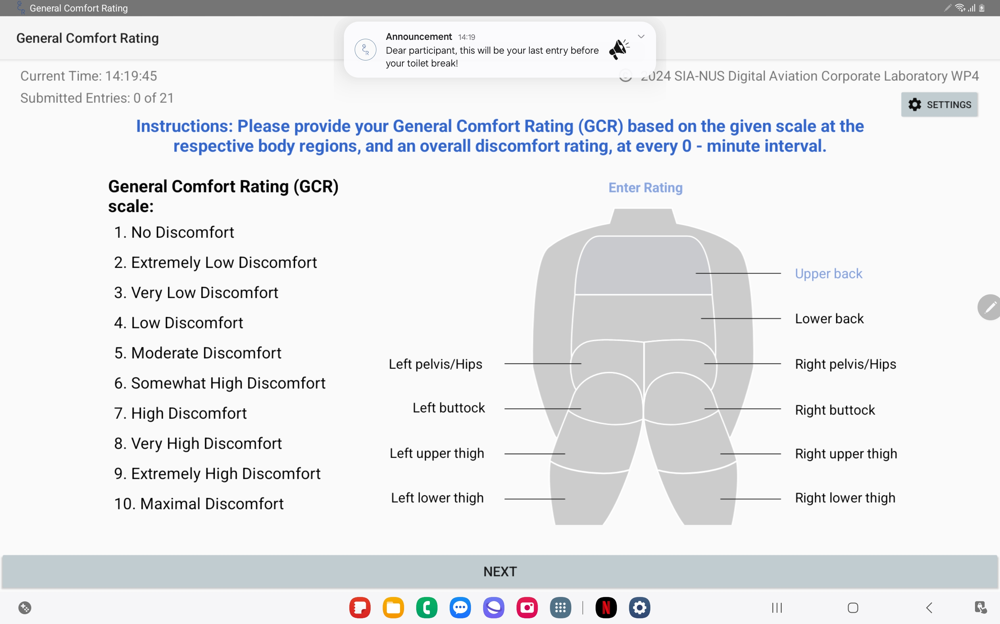

This project is a key initiative of the Cabin Seat Comfort Project at the SIA-NUS Digital Aviation Corporate Laboratory. It marked my inaugural foray into software development, having had no prior experience in the field. The Seat Project is structured into two phases. The first phase involves collecting data from participants in a flight simulator with the goal of developing an AI model that predicts the discomfort level of passengers based on their in-chair movements (ICM). The second phase aims to develop an AI-powered smart seating solution that preemptively adjusts the seat settings to alleviate discomfort caused by prolonged sitting.
The first phase of data collection involves participants rating their discomfort levels at specific body regions every 20 minutes during a 7-hour flight simulation. They are invited to the laboratory's flight simulator which replicates long-haul flight conditions including engine vibrations, cabin pressure, and oxygen levels. Throughout the simulation, participants are restricted to watching Netflix via the simulated in-flight entertainment (IFE) system and are required to fill in discomfort surveys at every 20-minute interval, with a 5-minute toilet break at every 2 hour intervals. This setup helps gather crucial feedback on discomfort, which is essential for developing an AI model designed to predict passenger discomfort levels in real time. In-chair movements (ICMs) are captured through pressure mats on the seat and backrest, analyzing time-series features such as frequent shifting and fidgeting, indicative of discomfort.
Figure 2: Body reference video introduced to participants before the study to guide them in rating their discomfort at specific body regions.
The General Comfort Rating (GCR) Android Application is an in-house customized app developed to collect discomfort ratings from passengers at their specific body region during studies conducted in the laboratory's flight simulator. It prompts participants to input their discomfort ratings at specific body regions every 20 minutes during the flight simulation, according to the GCR scale adapted from the Borg CR10 scale for determining perceived level of muscle fatigueness. The application also features a user-friendly interface that simplifies the discomfort rating process for participants, ensuring a seamless and efficient data collection process, allowing researchers to monitor their discomfort levels in real time.
Before I started developing the GCR App, the team had been collecting discomfort ratings manually using pen and paper for our pilot studies. This process was not only time-consuming but also prone to human error, as researchers had to manually input the data into spreadsheets for analysis. Furthermore, reaching for the pen and paper to record discomfort ratings introduce unnecessary fidgeting that affects the participants' in-chair movements, potentially skewing the data collected. The GCR Android Application was developed to address these issues, providing a more efficient and accurate method of collecting discomfort ratings from participants, by integrating the data collection process into our simulated IFE system.
Figure 3: Software Architecture Diagram of the GCR Data Collection System.
Each run of the study allows the cabin simulator to seat a maximum of four participants at a time. The study is conducted in a controlled environment, with participants seated in a cabin simulator that replicates long-haul flight conditions. Each Seat and its IFE tablet is labelled (2F, 2D, 3F, 3D) which allows participants to provide their discomfort ratings at specific body regions. The app prompts participants to fill in a discomfort survey every 20 minutes, with a 5-minute toilet break at every 2 hour intervals. The provided discomfort ratings are recorded to Google Apps Script using its unique API key. Feedback is provided when the data has been successfully recorded, prompting users to carry on with their activity. The recorded data is then synced to an online spreadsheet for real-time remote monitoring by researchers.
Recently, I integrated a new feature that allows researchers to broadcast notifications to participants' IFE tablets. This feature is particularly useful for studies that require participants to be alerted of specific events or instructions during the study which are not planned for. This allows participants to stay informed and updated, as the notification will be displayed on their IFE tablet screen. The notification system is designed to be non-intrusive, ensuring that participants are not distracted from their activity during the study. I implemented this feature using Firebase Cloud Messaging (FCM) allowing researchers to send notifications to participants' IFE tablets remotely in real time.
The app features a user-friendly interface, meticulously designed by the design team at Work Package 4, streamlining the discomfort rating process for participants. As preparations for the study progress, the app is continually enhanced with additional features based on extensive feedback and pilot studies. These enhancements aim to optimize the data collection process. Key features of the app include:
Figure 4: Login page of the App to give researcers access to control app activity and study duration.
The login page of the app provides researchers with administrative access to control app activity and study duration. Researchers can customize the app according to specific study requirements, such as setting the study duration, frequency of discomfort surveys and partipant's name. The app also allows researchers to enable or disable specific features based on the study's objectives, ensuring that the app is tailored to the specific needs of each study.
Figure 5: Notification system that prompts participants to fill in a discomfort survey every 20 minutes.
Arguably the most critical feature of the app is the notification system that prompts participants to complete a discomfort survey every 20 minutes. This ensures that feedback on discomfort levels is consistently provided throughout the duration of the study, allowing researchers to monitor these levels in real time. The notification system leverages a combination of Android's TimerTask, NotificationManager, and NotificationCompat classes. It initiates a new runnable at the start of the study and generates a dropdown notification at each 20-minute interval, prompting participants to access the app and fill out the survey, even during interruptions such as watching a movie.
The initial version of the app features a minimalist layout, deliberately free of any unnecessary elements that might distract participants from the study. I prioritized creating an interface that is both user-friendly and intuitive, avoiding complex functionalities that could confuse users. The design is straightforward, with clear instructions and prompts to seamlessly guide participants through the discomfort rating process. Additionally, the app provides researchers with administrative capabilities to customize it according to specific study requirements, which remain inaccessible to participants.
The app also features a customized notification system that allows researchers to send announcements or notifications to participants' IFE tablets. This feature is particularly useful for studies that require participants to be alerted of specific events or instructions during the study, such as a change in study duration or a reminder to fill in the discomfort surveys. The notification system is designed to be non-intrusive, ensuring that participants are not distracted from their activity during the study.
Figure 6: Customized notifications sent to participants' IFE tablets using Firebase Cloud Messaging (FCM).
This feature was implemented using Firebase Cloud Messaging (FCM), a cross-platform messaging solution that allows researchers to send notifications to participants' IFE tablets remotely in real time. Researchers can customize the content of the notifications, ensuring that participants receive relevant information during the study. This capability enhances the communication between researchers and participants, enabling researchers to provide timely updates and instructions to each participants separately, thus improving the overall study experience.Earlier versions of the app collects the inputted discomfort ratings from participants and stores them locally on the IFE tablet in a csv file. However, this method of data collection was inefficient as researchers had to manually retrieve the data from each device and compile them into a single spreadsheet for analysis. Additionally, it was challenging to monitor participants' discomfort levels in real time, as researchers had to wait until the end of the 7-hour study to analyze the data, only to realize that some participants had missed out on filling in the discomfort surveys at some intervals. To address these issues, I developed a feature that syncs the collected data to an online spreadsheet in real time, allowing researchers to monitor participants' discomfort feedback as it is being collected.
Figure 6: Discomfort ratings from participants are logged to an online spreadsheet using Google Sheets API and Google Apps Script.
The real-time data monitoring feature utilizes the Google Sheets API and Google Apps Script to automatically log discomfort ratings inputted by participants into an online spreadsheet. Each time participants submit their entries, the app updates the spreadsheet, enabling researchers to monitor discomfort feedback instantly. This capability greatly improves the efficiency of the data collection process by centralizing all data into a single spreadsheet, thus eliminating the need for manual retrieval from individual IFE devices.
Figure 7: Real-time data monitoring feature that syncs collected data to an online spreadsheet for analysis.
The real-time data monitoring feature also allows researchers to identify participants who have missed out on filling in the discomfort surveys at specific intervals (maybe because they fell asleep or the notification did not arrive). This enables researchers to verbally prompt these participants to complete the surveys, ensuring that the data collected is comprehensive and accurate. In addition, the app tracks the time taken by participants to complete the surveys, providing researchers with insights into the efficiency of the data collection process. This information is crucial for optimizing the study design and ensuring that the data collected is reliable and consistent.
Developing the GCR App has been a highly enriching experience, significantly enhancing my skills in app development, marking my first (solo) project in software development. The app has greatly improved the efficiency and accuracy of data collection for the Cabin Seat Comfort Project, enabling real-time monitoring of participants' discomfort feedback. As I continue to receive user feedback, I am actively refining the app, making iterative improvements that enhance its functionality and ensure the interface remains user-friendly and the data monitoring capabilities robust. This ongoing development process has not only streamlined the study but also provided researchers with crucial insights into passenger discomfort during long-haul flights.